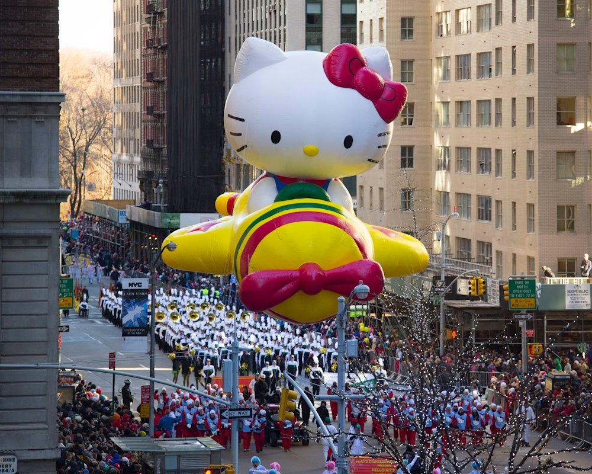
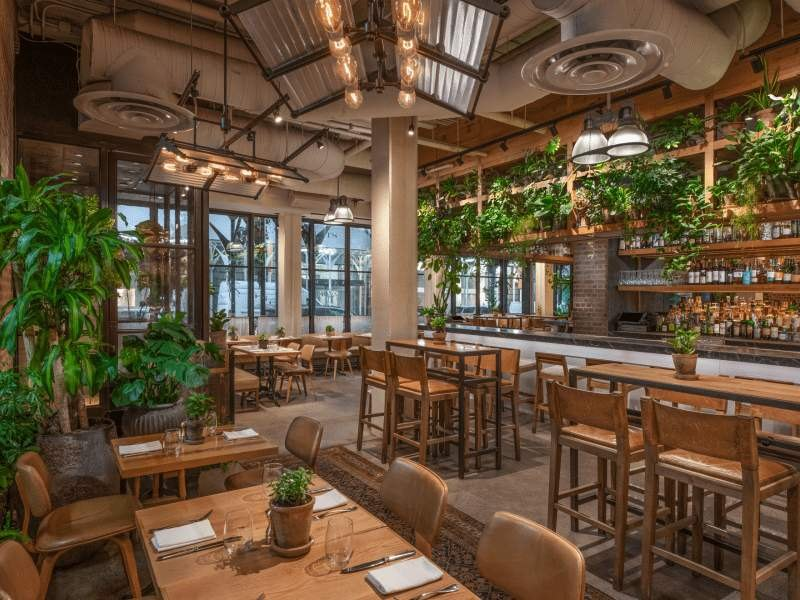
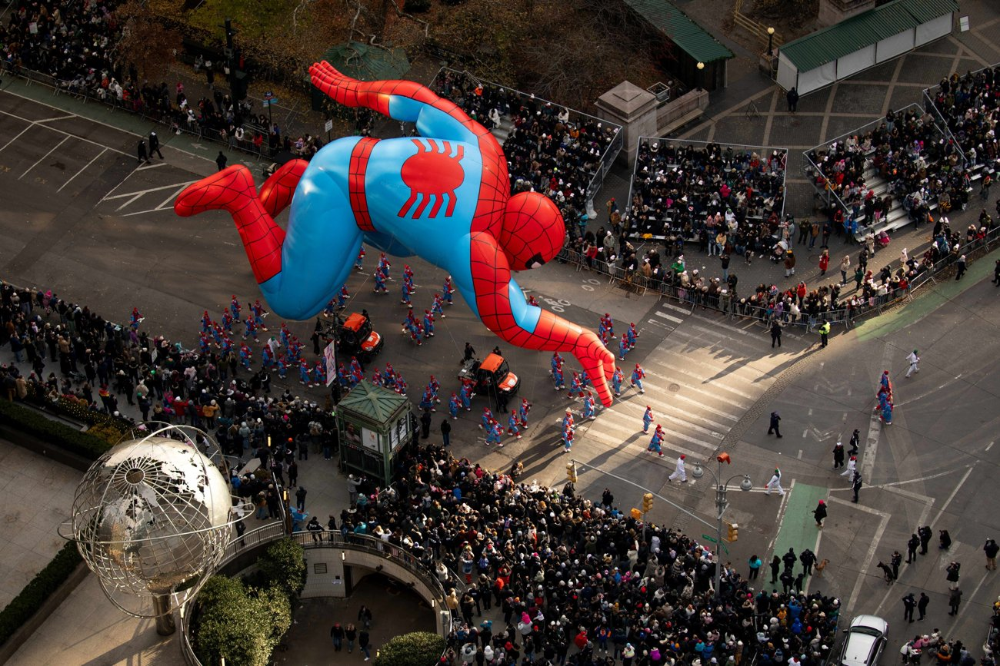

Start with Hilton’s entry view and full high-floor view as transparent benchmarks, then ask 1 Hotel Central Park and Warwick to compete. With Rue, a warm room and easy bathroom access have real value. A premium hotel should still feel worthwhile for the other three days.
Your previous ~$10,000 trip benchmark is a useful reference, not a new hard cap. The Hilton entry tier could fit; the fuller view and luxury packages stretch it. A normal hotel plus outdoor viewing buys much better value if the early start and crowds feel manageable.
Dates are a proposal, not a reservation. Nov 24–28 gives a travel buffer before Thursday, fits Hilton’s four-night categories and avoids a Sunday flight. A Nov 25–28 three-night version can suit Mandarin’s room minimum, subject to its exact stay conditions.
FIVE HOTELS · A REAL RANGE
Pick your window on New York.
Published rates, quote-only offers and planning allowances are labeled separately. No room inventory has been held or confirmed. Photos are representative; ask for the exact view before paying.
Hilton’s parade-view marketing photo; exact sightline depends on category

A past Macy’s parade outside Hilton Midtown
The clearest price benchmark
New York Hilton Midtown
1335 Sixth Avenue · 53rd–54th St
The practical first inquiry for watching in pajamas. Compare the precise angle before paying: “side” and “full” are meaningfully different experiences.
With Rue: Ask for a crib-approved room with space to nap away from the window.
Before booking: Dates, crib fit, taxes, mandatory charges and cancellation terms still need written confirmation. A standard Hilton reservation does not buy a parade view.
Representative City King; not a confirmed parade category
A historic parade scene from the hotel’s official galleryRepresentative Park Suite

Jams: the greenery-filled dining room
Best match for your travel style
1 Hotel Central Park
1414 Sixth Avenue · 58th St
Warm wood, greenery and seasonal food make this the strongest aesthetic match to the nature-forward hotels you like. The parade package is real; its rate and room allocation are not public.
Quote required2026 in-room parade package is advertised
Book this
2026 Thanksgiving Parade View offer
Ask for
Exact room, floor, direction and view photo
Planning allowance
$2,000–$4,000/night; not a hotel quote
4-night allowance with modeled room tax: ~$9,194–$18,374, before unquoted fees.
With Rue: Request crib, bath setup, refrigerator and room dimensions; compare a suite if bedtime separation matters.
Before booking: Do not substitute an ordinary City or Park room for the special offer. Minimum stay, deposit, fees and cancellation are unpublished on the offer page.
A representative terrace; parade access and view require confirmation
Classic New York wildcard
Warwick New York
65 West 54th Street
A handsome older hotel at Sixth Avenue and 54th Street. Worth checking against Hilton if you want a more intimate atmosphere and a room or suite with a useful angle.
Quote requiredparade-view rooms by direct inquiry
Evidence
Official hotel invites parade-view inquiries
2026 status
Specific package and availability unverified
Planning allowance
$1,200–$2,500/night; not an advertised rate
4-night allowance with modeled room tax: ~$5,522–$11,489, before unquoted fees.
With Rue: Ask about crib placement, step-free room access and a separated living area.
Before booking: Get the parade sightline in writing. A city-view room, terrace or suite name alone is insufficient; some windows face a side street.
Historic parade at Columbus Circle, photographed from above

Historic balloon passing Columbus Circle
The special-occasion splurge
Mandarin Oriental, New York
80 Columbus Circle
A sweeping, elevated perspective above Columbus Circle. Choose this for comfort and a spectacular city setting; the balloons are seen from above rather than at eye level.
Quote required3-night room / 1-bedroom suite minimum
2026 stay condition
Stay over Nov 25–27; ask about Nov 24–28
Two-bedroom suites
5-night minimum
Planning allowance
$3,000–$6,000/night; not a quoted rate
4-night room allowance with modeled tax: ~$13,784–$27,554. Suites have higher nightly occupancy taxes.
With Rue: Request a crib and a one-bedroom quote for separate sleep space. Ask about pool family hours.
Before booking: 50% deposit is non-refundable and non-transferable; full payment/cancellation penalty within 30 days. Confirm exact terms before committing.
AperiBar cocktail from the restaurant’s official gallery
Spend on the city instead
LUMA Hotel Times Square
120 West 41st Street
A comfortable Bryant Park base with a 2026 Thanksgiving offer. Good for markets, food and Midtown walks, but its package is not a reserved parade seat or a view-room promise.
$350–$650nightly planning range only · live rate not retrieved
Parade plan
Public street viewing, subject to access
2026 offer
Breakfast to go + up to $100 dinner credit
Published cancellation
72 hours before 3 p.m. arrival; verify rate terms
4-night allowance with modeled tax: ~$1,621–$2,998, before unquoted fees.
With Rue: Reserve a crib, confirm room occupancy, and keep the outdoor parade optional if the early start is too much.
Before booking: Nearby does not mean easy front-row access. The blocks near the TV production zone can restrict spectators. Use the official route map and go north of 38th Street.
Macy’s confirms the 100th edition for Thanksgiving 2026 and an 8:30 a.m. broadcast start. Block-by-block passing times and final access rules need a later check.
01
Know what “view” means.
Side view, passing view, full avenue view and a high bird’s-eye view are different products. A park view is not automatically a parade view. Ask for an unedited photo from the actual category and a written guarantee.
02
Street viewing takes stamina.
Plan around an early arrival, cold sidewalks and limited toilets. Traditional viewing areas include the west side of Central Park West around 75th–61st and Sixth Avenue north of 38th, subject to 2026 rules. Avoid relying on Herald Square, Columbus Circle or the 34th–38th TV zone.
03
Stay on the right side.
Police barriers can make a five-minute crossing impossible. Get hotel entry instructions; walk to your viewing point. Do not plan a Thanksgiving-morning flight or a restaurant across the route before streets reopen.
Map below uses the traditional route as a planning reference, not a verified 2026 access map. Street viewing is free; televised performances at Herald Square are not what you see from every hotel window.
THE FIVE-DAY PLAN
Enough magic. Enough breathing room.
One useful neighborhood at a time. Each day has a full schedule, food plan, transport, nap strategy, wet-weather alternative and cost stack.
Green markers are hotels. Numbered terracotta markers open the daily plan. The gold line follows the traditional parade streets; it does not imply public access along every segment.
Live Google Flights snapshot checked September 20, 2026, for Nov 24–28 and two adults. Airline checkout can reprice. Rue must be added as an infant; no third seat is included.
SAT 28 · DL969LGA 16:00 → ATL 18:39Nonstop · 2h 39m · Airbus A321
Seat selection included; change without a change fee, fare difference applies; non-refundable. One carry-on per adult. Displayed first checked bag: $90 per adult for the round trip, before any card/status waiver.
Worth comparing: Comfort Classic was $2,036 for both adults—$180 more in total. Refundable Main Extra was $2,256.
Main Cabin includes standard seat selection and changes with a possible fare difference; non-refundable. The $1,306 Basic fare restricts changes and charges for seat selection. Main Cabin’s displayed first checked bag was $100 per adult round trip.
The trade: ~$469 less airfare than Delta with similarly useful timing. Compare after baggage benefits and infant handling. AA4557 outbound (Embraer 175), AA4481 return (Embraer 170); recheck at airline checkout.
Google suggested Nov 23–27 from $604 total for two adults, but that was a date-grid lead—not a selected, verified nonstop itinerary. Reprice before relying on it. It preserves four nights but trades Friday sightseeing for a Monday arrival.
Rue’s flight setup
Delta allows an under-two domestic lap infant at no fare; add Rue to the booking. Stroller and child safety seat checking are complimentary. Price a separate seat with an approved child seat if desired; the calculator allows a third-seat allowance.
Use one Midtown hotel and skip the rental car. Times and car prices below are planning allowances, not live transfer quotes; holiday traffic can exceed them.
Airport
Best family approach
Transit alternative
Planning reality
LGA First choice
Prebook a car with Rue’s correct child seat. ~$100–$160 each way for the family, confirm all-in price.
Free Q70 to Jackson Heights/Roosevelt Av, then subway. ~$6 for two adults at current base fare; use accessible stations.
Car ~45–90 min; transit ~60–90 min door to door. Delta uses Terminal C; verify flight details.
JFK If fare/timing wins
Car allowance ~$130–$200 each way. More time and distance from Midtown.
AirTrain → Jamaica → LIRR to Grand Central Madison or Penn. AirTrain is $8.75 first adult + $4.50 second with eligible same-card group taps; rail extra.
Rail ~60–90 min door to door; car ~60–120+ min. Child under 5 free on AirTrain.
EWR Only for a strong fare
Car allowance ~$150–$230 each way; specify bridge/tunnel tolls and child seat.
AirTrain/shuttle connection → NJ Transit → New York Penn. Budget ~$40–$50 total for two adults, verify current fare.
Rail ~75–110 min door to door. Construction can change AirTrain connections; check airport alerts.
Choose one or two. These are substitutions, not more things to squeeze into every day.
A previous festive season at 1 Hotel
The pajama parade ritual
Order breakfast, put on holiday pajamas, and take the same family photo by the window each year. Bring a small favorite toy and let the parade come to you.
Jams dining room · 1 Hotel
A farm-to-table Thanksgiving
Jams is the closest match to your food preferences. Ask for its 2026 holiday menu, an early seating and a high chair. If the meal is too formal, keep Thanksgiving at your hotel and save Jams for Tuesday.
Explore Jams ↗A bird’s-eye perspective over the city · Mandarin Oriental
Your tiny gondola adventure
Swap Saturday’s zoo for the Roosevelt Island Tram and a short waterfront walk only if timing allows. It gives you a little alpine-cable-car feeling over the East River. Allow ~90 minutes; budget $12 for two adult round trips.
Tram details ↗Winter Village in a previous season · Colin Miller / Bryant Park
One ornament, one memory
Pick a single ornament at a holiday market, write the year on its box, and make hot chocolate the reward. Keep Black Friday about atmosphere, not hours in a shopping line.
USD for the family, four nights and five days. Start with a scenario, then edit the assumptions. Published hotel prices are not availability confirmations.
ESTIMATED FAMILY TOTAL$9,047
Four-night planning model, not a booking quote.
Excludes shopping, insurance, pet care, home-to-ATL transport/parking and paid childcare. $250 is a placeholder for unquoted fees and incidental changes, not a guarantee those costs are covered.
For comparison, the five daily pages use Hilton Side View, Delta Main Classic, two checked-bag allowances, the optional Rockettes show and a zoo visit. Their sum is ~$8,797; add the $250 buffer here for ~$9,047. Comfort Classic adds $180. American Main Cabin saves ~$449 after the modeled baggage difference.
SMALL DETAILS, BETTER DAYS
The family field notes.
Pack for a cold sidewalk.
Bring layers, warm hats, gloves, rain cover, stroller footmuff, carrier, spare outfits, snacks and a small thermos. Late November can be chilly, wet or windy; use the actual forecast the week before, not the sunshine in marketing photos.
Make the room work.
Confirm crib, refrigerator, kettle, bath arrangement, blackout curtains and room size. Ask where you can sit after bedtime without waking Rue. Identify milk and breakfast supplies on arrival; a suite can be more useful than a fancier lobby.
Keep a graceful exit.
Protect a midday nap and one supervised play break daily. Ask about high chairs before meals. Avoid assuming a Broadway show admits babies; the Rockettes under-two rule is specific to that show. Reserve flexible activities whenever possible.
A ready-to-use hotel inquiry checklist
“We are considering Nov 24–28, 2026 for two adults and a child under two. Please quote a crib-compatible room with a guaranteed in-room Thanksgiving parade view.”
Which room category, floor range and window direction? Full, partial or passing view?
Can you provide a representative photograph from this exact category?
What is the all-in four-night total, including taxes, mandatory fees and any child charge?
Minimum stay, deposit, cancellation deadline and non-refundable amount?
Crib confirmation, separate sleeping area, refrigerator and bath setup?
Guest entry instructions during closures, meal options and viewing hours?
This is a draft for you to use. No inquiries or messages have been sent.
What to reserve, and in what order
First: compare written parade-view quotes; choose between view room, outdoor package or public viewing.
Then: reprice flights and match hotel cancellation risk before paying.
Next: Thanksgiving meal, correctly equipped airport transfers and crib.
After that: AMNH and optional Rockettes. Tavern generally opens reservations two months ahead—check around Sep 26 for Thanksgiving, with holiday exceptions possible.
One week out: weather, Macy’s route/inflation details, attraction hours and transit alerts.
CHECKED SEPTEMBER 20, 2026
Sources, not wishful thinking.
Live flight results were inspected for the exact dates and two adults. Hilton rates are publicly listed 2026 category prices. Other hotel ranges are explicitly our planning allowances; no live room availability is claimed. Restaurant holiday menus, inflation timing and final route access still need checking.
Images are locally cached from official hotel and destination sites for this planning guide. Copyright remains with the original owners. Hotel interiors and parade photos are representative, and many seasonal images show earlier years.